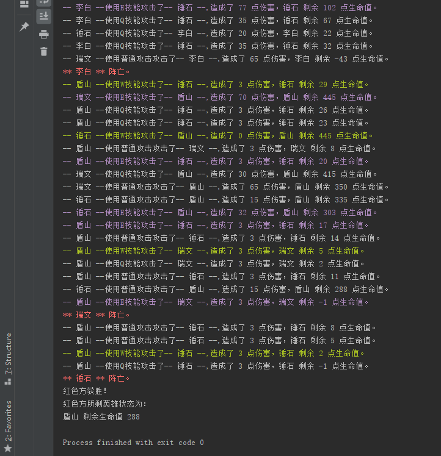

原文出处:本文由博客园博主suwanbin提供。
原文连接:https://www.cnblogs.com/suwanbin/p/11239734.html
原文连接:https://www.cnblogs.com/suwanbin/p/11239734.html
红蓝英雄大乱斗
游戏规则
'''
有红蓝两方英雄（可自定义个数）
随机一方英雄使用随机攻击方式攻击另一方英雄，任意一方英雄全部阵亡则游戏结束
每个英雄有 名字、生命值、普通攻击、Q技能攻击、W技能攻击、E技能攻击以及对应的伤害值
当生命值为 0 时阵亡，不再参与战斗
'''程序运行截图
请忽略颜色（Python如何输出带颜色的文字方法）

具体实现代码
程序代码


import random
import time
class Hero:
def __init__(self, name, health, attack, q_hurt, w_hurt, e_hurt):
lcs = locals()
lcs.pop('self')
self.__dict__.update(lcs)
def attack(self, enemy):
print(f"-- {self.name} --使用普通攻击攻击了-- {enemy.name} --,造成了 {self.attack} 点伤害，{enemy.name} 剩余 {enemy.health} 点生命值。\033[0m")
enemy.health -= self.attack
def Q(self, enemy):
print(f"\033[0m-- {self.name} --使用Q技能攻击了-- {enemy.name} --,造成了 {self.q_hurt} 点伤害，{enemy.name} 剩余 {enemy.health} 点生命值。\033[0m")
enemy.health -= self.q_hurt
def W(self, enemy):
print(f"\033[32m-- {self.name} --使用W技能攻击了-- {enemy.name} --,造成了 {self.w_hurt} 点伤害，{enemy.name} 剩余 {enemy.health} 点生命值。\033[0m")
enemy.health -= self.w_hurt
def E(self, enemy):
print(f"\033[35m-- {self.name} --使用E技能攻击了-- {enemy.name} --,造成了 {self.e_hurt} 点伤害，{enemy.name} 剩余 {enemy.health} 点生命值。\033[0m")
enemy.health -= self.e_hurt
def check_hero(enemy, team):
if enemy.health <= 0:
print(f"\033[31m** {enemy.name} ** 阵亡。\033[0m")
if team == 'blue':
blue_team.remove(enemy)
elif team == 'red':
red_team.remove(enemy)
def get_random_skill():
return skill_list.get(random.randint(1, 4))
def get_random_blue_hero():
return blue_team[random.randint(0, len(blue_team) - 1)]
def get_random_red_hero():
return red_team[random.randint(0, len(red_team) - 1)]
blue_team = [
Hero('瑞文', 465, 65, 30, 25, 70),
Hero('提莫', 300, 35, 50, 40, 60),
]
red_team = [
Hero('李白', 320, 60, 35, 29, 77),
Hero('鲁班', 280, 79, 35, 40, 80),
]
skill_list = {
1: Hero.attack,
2: Hero.Q,
3: Hero.W,
4: Hero.E,
}
while len(red_team) > 0 and len(blue_team) > 0:
skill = get_random_skill()
blue = get_random_blue_hero()
red = get_random_red_hero()
flag = random.randint(0, 1)
if flag:
skill(blue, red)
check_hero(red, 'red')
else:
skill(red, blue)
check_hero(blue, 'blue')
time.sleep(0.3)
if len(red_team) == 0:
print(f"蓝色方获胜！")
print(f"蓝色方所剩英雄状态为：")
for hero in blue_team:
print(f"{hero.name} 剩余生命值 {hero.health}")
elif len(blue_team) == 0:
print(f"红色方获胜！")
print(f"红色方所剩英雄状态为：")
for hero in red_team:
print(f"{hero.name} 剩余生命值 {hero.health}")带注释版的代码
import random
import time
# 定义一个英雄类，表示英雄这一类的共同特征
class Hero:
def __init__(self, name, health, attack, q_hurt, w_hurt, e_hurt):
lcs = locals()
lcs.pop('self')
self.__dict__.update(lcs)
'''
********************************** 上述代码讲解 *************************************
# 每次调用类生成对象的时候都会执行这里面的代码，并将对象作为第一个参数self 传进来
print(locals())
# {'e_hurt': 70, 'w_hurt': 25, 'q_hurt': 30, 'attack': 65, 'health': 465, 'name': '瑞文', 'self': <__main__.Hero object at 0x000002371823B278>}
lcs = locals() # 这个locals()在 __init__ 函数里 可以获取 __init__ 函数名称空间里的那些名字，他是一个字典
lcs.pop('self') # 发现上面的 locals() 多了一个 self 是不需要的，那就把它删掉
print(lcs)
# {'e_hurt': 70, 'w_hurt': 25, 'q_hurt': 30, 'attack': 65, 'health': 465, 'name': '瑞文'}
# 这些内容正是初始化对象时想做的事（只不过是 对象.e_hurt = 70 这样的形式而已）
self.__dict__.update(lcs) # 将这些东西放到对象里，就重复了n变 self.参数 = 参数 （self.name = name）这样的动作
print(self.__dict__)
# {'e_hurt': 70, 'w_hurt': 25, 'q_hurt': 30, 'attack': 65, 'health': 465, 'name': '瑞文'}
最初始的写法：
self.name = name
self.health = health
self.attack = attack
self.q_hurt = q_hurt
self.w_hurt = w_hurt
self.e_hurt = e_hurt
'''
def attack(self, enemy):
enemy.health -= self.attack
print(f"-- {self.name} --使用普通攻击攻击了-- {enemy.name} --,造成了 {self.attack} 点伤害，{enemy.name} 剩余 {enemy.health} 点生命值。\033[0m")
def Q(self, enemy):
enemy.health -= self.q_hurt
print(f"\033[0m-- {self.name} --使用Q技能攻击了-- {enemy.name} --,造成了 {self.q_hurt} 点伤害，{enemy.name} 剩余 {enemy.health} 点生命值。\033[0m")
def W(self, enemy):
enemy.health -= self.w_hurt
print(f"\033[32m-- {self.name} --使用W技能攻击了-- {enemy.name} --,造成了 {self.w_hurt} 点伤害，{enemy.name} 剩余 {enemy.health} 点生命值。\033[0m")
def E(self, enemy):
enemy.health -= self.e_hurt
print(f"\033[35m-- {self.name} --使用E技能攻击了-- {enemy.name} --,造成了 {self.e_hurt} 点伤害，{enemy.name} 剩余 {enemy.health} 点生命值。\033[0m")
def check_hero(enemy, team):
if enemy.health <= 0:
# \033[31m 这种格式的是打印时的颜色控制（颜色可参考 https://www.cnblogs.com/easypython/p/9084426.html）
print(f"\033[31m** {enemy.name} ** 阵亡。\033[0m")
if team == 'blue':
blue_team.remove(enemy)
elif team == 'red':
red_team.remove(enemy)
# 随机选择一种攻击方式
def get_random_skill():
# random_index = random.randint(1, 4)
# random_skill = skill_list.get(random_index)
# return random_skill # 函数名当做返回值返回，拿到可以直接加括号调用执行函数
return skill_list.get(random.randint(1, 4)) # 上面代码的简便写法
# 随机选择一个蓝色方英雄
def get_random_blue_hero():
# 返回 blue_team 这个列表的索引为 random.randint(0, len(blue_team) - 1) 返回值的元素（英雄对象）
# return blue_team[random.randint(0, len(blue_team) - 1)] # 下面几行的简便写法
random_idndex = random.randint(0, len(blue_team) - 1)
hero = blue_team[random_idndex]
return hero
# 随机选择一个红色方英雄
def get_random_red_hero():
return red_team[random.randint(0, len(red_team) - 1)]
# 蓝色方英雄阵容 --- 可自定义 ---
# 方便随机数取英雄对象
blue_team = [
# 英雄名 生命值 普通攻击力 Q技能伤害 W技能伤害 E技能伤害
# 瑞文 465 65 30 25 70
Hero('瑞文', 465, 65, 30, 25, 70),
Hero('提莫', 300, 35, 50, 40, 60),
Hero('锤石', 600, 15, 20, 0, 32),
]
# 红色方英雄阵容 --- 可自定义 ---
# 方便随机数取英雄对象
red_team = [
Hero('李白', 320, 60, 35, 29, 77),
Hero('鲁班', 280, 79, 35, 40, 80),
Hero('盾山', 800, 3, 3, 3, 3),
]
# 技能数字对应表（方便根据随机数取技能）
skill_list = {
1: Hero.attack,
2: Hero.Q,
3: Hero.W,
4: Hero.E,
}
def run():
while len(red_team) > 0 and len(blue_team) > 0:
# 调用方法随机获得一个技能
skill = get_random_skill()
# 调用方法随机获得一个蓝色方英雄
blue = get_random_blue_hero()
# 调用方法随机获得一个红色方英雄
red = get_random_red_hero()
# 随机选择一方为攻击方（那么另一方就是被攻击方）
flag = random.randint(0, 1)
if flag:
skill(blue, red)
check_hero(red, 'red')
else:
skill(red, blue)
check_hero(blue, 'blue')
# 暂停0.3秒，可以慢慢看战斗过程
time.sleep(0.3)
# 如果有任意一方没有英雄了，即游戏结束
if len(red_team) == 0:
print(f"蓝色方获胜！")
print(f"蓝色方所剩英雄状态为：")
for hero in blue_team:
print(f"{hero.name} 剩余生命值 {hero.health}")
elif len(blue_team) == 0:
print(f"红色方获胜！")
print(f"红色方所剩英雄状态为：")
for hero in red_team:
print(f"{hero.name} 剩余生命值 {hero.health}")
if __name__ == '__main__':
run()
'''
战斗记录
************************** 省略n多中间战斗步骤 *********************************
-- 锤石 --使用W技能攻击了-- 盾山 --,造成了 0 点伤害，盾山 剩余 42 点生命值。
-- 盾山 --使用E技能攻击了-- 瑞文 --,造成了 3 点伤害，瑞文 剩余 289 点生命值。
-- 瑞文 --使用E技能攻击了-- 盾山 --,造成了 70 点伤害，盾山 剩余 -28 点生命值。
** 盾山 ** 阵亡。
蓝色方获胜！
蓝色方所剩英雄状态为：
瑞文 剩余生命值 289
锤石 剩余生命值 235
战斗记录2
************************** 省略n多中间战斗步骤 *********************************
-- 盾山 --使用普通攻击攻击了-- 锤石 --,造成了 3 点伤害，锤石 剩余 11 点生命值。
-- 锤石 --使用普通攻击攻击了-- 盾山 --,造成了 15 点伤害，盾山 剩余 288 点生命值。
-- 盾山 --使用E技能攻击了-- 瑞文 --,造成了 3 点伤害，瑞文 剩余 -1 点生命值。
** 瑞文 ** 阵亡。
-- 盾山 --使用普通攻击攻击了-- 锤石 --,造成了 3 点伤害，锤石 剩余 8 点生命值。
-- 盾山 --使用普通攻击攻击了-- 锤石 --,造成了 3 点伤害，锤石 剩余 5 点生命值。
-- 盾山 --使用W技能攻击了-- 锤石 --,造成了 3 点伤害，锤石 剩余 2 点生命值。
-- 盾山 --使用Q技能攻击了-- 锤石 --,造成了 3 点伤害，锤石 剩余 -1 点生命值。
** 锤石 ** 阵亡。
红色方获胜！
红色方所剩英雄状态为：
盾山 剩余生命值 288
'''备注：自己写着玩儿的程序，如有bug，请别当真，这只是python面向对象方面的一个小练习；如果你很感兴趣，期待你写一个更棒的版本分享出来一起玩哦~